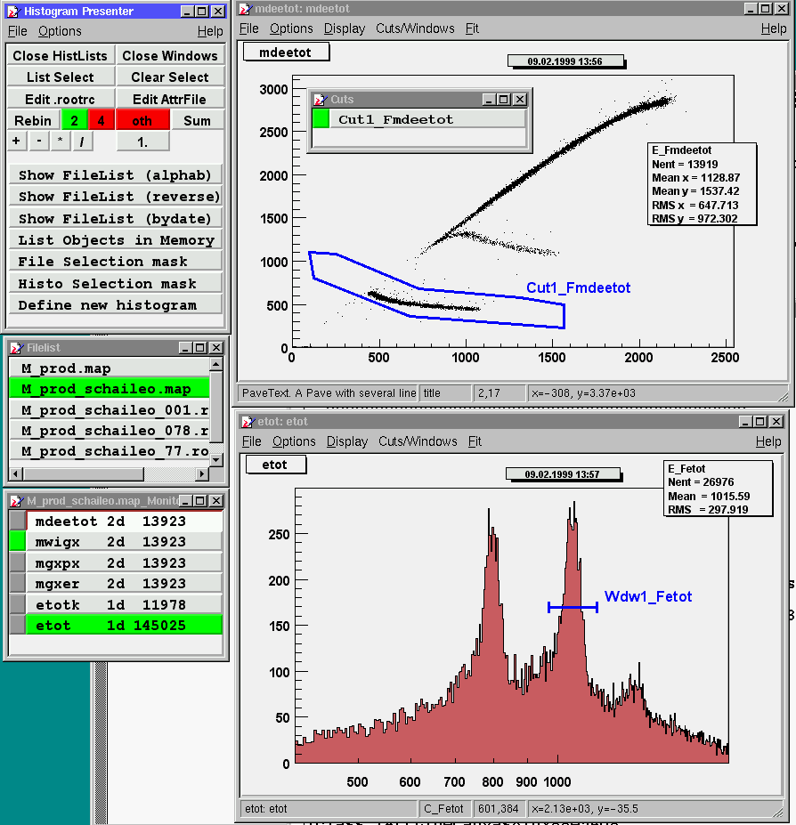

HistPresent Help
Overview
HistPresents startup window
Options and parameters
Help on items in Display popup menu
Fitting
Cuts and windows
Calibrating 1-dim histograms
Display a ROOT tree
Operations on histograms
Use of Attributes Macro
Use of .rootrc file
Use of the mouse
Convert ASCII data to histgrams / graphs
Use of the graphics editor
A picture of an example session is shown
here
Ab example session
